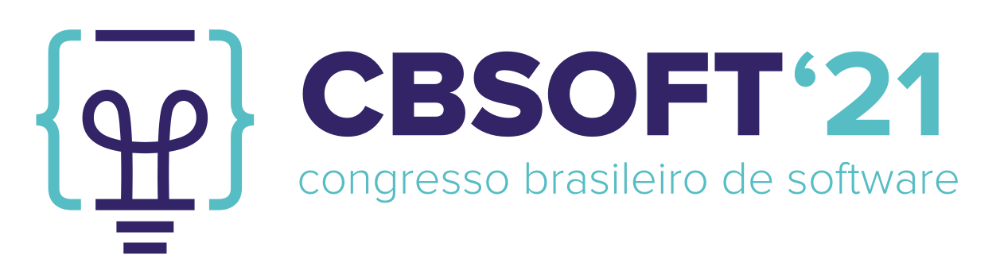

Long Bio
Rodrigo Laigner is a second-year PhD student in the Department of Computer Science at University of Copenhagen .
He is a research scholar in data management systems for Data Management Systems Group at University of Copenhagen since 2020 under the supervision of Prof. Yongluan Zhou and Associate Prof. Marcos Antonio Vaz Salles which is part of the Software, Data, People & Society Research Section from the Department of Computer Science at University of Copenhagen. His main research interests are microservices, event-driven architecture, and big data systems. His research output is available in publications.
He holds a Master's in Informatics from PUC-Rio (2020). It is noteworthy that the postgraduate program of the Department of Informatics is evaluated by the Brazilian Federal Agency for Postgraduate Education (CAPES) as being of international excellence (maximum score, 7). Has successfully finished the master's thesis before the deadline, with related publications, and high academic performance. Rodrigo holds a Bachelor's degree in Information Systems from the Fluminense Federal University (UFF), Brazil (2017), in cooperation with University of Colorado Denver (UCD), USA (2014-2015). The Information Systems major received the maximum grade in the annual test ENADE (Brazilian assessment test for higher-education) in 2015. The results of his bachelor's thesis was published in SEAA 2018. Due to his academic performance, has been invited by the Computer Science department to pursue graduate studies.
He has worked extensively in industry for projects in software engineering and data management systems, mostly related to event-driven architecture, microservices, web-based and data-centric systems, including but not limited to software architecture and design of large scale systems, optimization of access patterns of ORM source code, and database migration and tuning. Furthermore, has worked for research projects in software engineering, information systems, and data systems. Relevant venues have accepted his work for publication, such as the Conference on Very Large Data Bases (VLDB), Conference on Distributed and Event-Based Systems (DEBS), and EuroMicro Conference on Software Engineering and Advanced Applications (SEAA).
Feel free to contact me. Specially if you are a researcher looking for collaboration.
Department of Computer Science - University of CopenhagenUniversitetsparken 5, 2100 København Ø
rnl [at] di.ku.dk
Spoken Languages: English (fluent); Spanish (intermediary); Portuguese (mother language).
Service
Completed Supervisions
[MSc] Anna Lesniak (2021). Enforcing Data Consistency in Event-driven Microservices through Event-based Constraints. Co-supervision with Yongluan Zhou.
[MSc] Prangshuman Das (2021). Identifying and Quantifying Feral Anomalies in Event-Driven Applications. Co-supervision with Yongluan Zhou.
Teaching
[MSc] Advanced Computer Systems (ACS), 2020-2021, Block 4. Master of Science (MSc) in Computer Science.
External Reviewer
ICDE 2021, CIKM 2021, ICDE 2020, CIKM 2020, SSDBM 2020
Honors, Awards and Grants (Selection)
Click on each award title to see a summary.
-
CTD-ES 2021CTD-ES 2021Master Thesis classified as one of the best in the country in the context of CBSOFT - SBES 2021 - CTD-ES Software Engineering Master Theses Competition.
-
Scholarship Grant 2020PhD Fellowship GrantI received a fellowship in the context of the TALENT program, co-funded by the European Union to support my PhD research.
-
Scholarship Grant 2019PhD Fellowship GrantI received a fellowship in the context of the project Consistent and Efficient Event-Driven Architecture (CEEDA) sponsored by the Independent Research Fund Denmark (DFF) to support my PhD research.
-
ANP 2019Prêmio ANP de Inovação e Tecnologia 2019Award received from Agência Nacional do Petróleo, Gás Natural e Biocombustíveis (ANP) due to sucessful projects conducted with Oil&Gas industry partners in Tecgraf/PUC-Rio.
-
SBES 2019Third Best Paper Award
 Award received in Salvador, Brazil during the Brazilian Symposium on Software Engineering (SBES) in 2019.
Award received in Salvador, Brazil during the Brazilian Symposium on Software Engineering (SBES) in 2019. -
Fellowship Grant 2018Tecgraf/PUC-Rio Graduate FellowshipI received a graduate fellowship from Tecgraf/PUC-Rio institute to work of scientific projects with industrial partners in the Oil&Gas domain.
-
Fellowship Grant 2018CAPES Graduate Fellowship Grant
 I received a fellowship from Brazilian Federal Agency for Postgraduate Education (CAPES) to support my M.Sc. research.
I received a fellowship from Brazilian Federal Agency for Postgraduate Education (CAPES) to support my M.Sc. research. -
Fellowship Grant 2016Undergraduate Fellowship Grant
 I received an undergraduate fellowship from FAPERJ to work of research projects under the advisory of Dr. Marcos Kalinowski.
I received an undergraduate fellowship from FAPERJ to work of research projects under the advisory of Dr. Marcos Kalinowski. -
Dean's List 2015Dean's List University of Colorado DenverDean's List for Spring 2015.
-
Dean's List 2014Dean's List University of Colorado DenverDean's List for Fall 2014.
-
Scholarship Grant 2014CAPES Scholarship Grant
I received a scholarship from Brazilian Federal Agency for Postgraduate Education (CAPES) to support my B.Sc academic exchange.